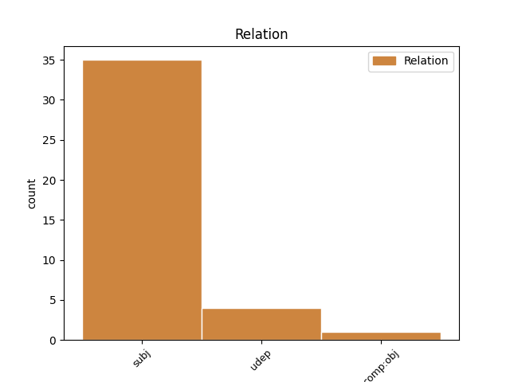

Distribution of features within this leaf

Agreement Rules sorted by frequency.
- When the dependent token is the subject(subj) of the head token, and the head token is VERB and the dependent token is PRON.
1 Я я PRON _ Case=Nom|Number=Sing|Person=1 3 subj _ _
2 не _ _ _ _ 0 _ _ _
3 дышу дышуть VERB _ Aspect=Imp|Mood=Ind|Number=Sing|Person=1|Tense=Pres|VerbForm=Fin|Voice=Act 0 _ _ _
4 , _ _ _ _ 0 _ _ _
5 а _ _ _ _ 0 _ _ _
6 пью _ _ _ _ 0 _ _ _
7 благоуханье _ _ _ _ 0 _ _ _
8 Моей _ _ _ _ 0 _ _ _
9 земли _ _ _ _ 0 _ _ _
10 равнинной _ _ _ _ 0 _ _ _
11 и _ _ _ _ 0 _ _ _
12 лесной _ _ _ _ 0 _ _ _
13 . _ _ _ _ 0 _ _ _
1 Энэ _ _ _ _ 0 _ _ _
2 үедэ _ _ _ _ 0 _ _ _
3 гэһэн _ _ _ _ 0 _ _ _
4 тэрээр тэрээр PRON _ Case=Nom|Number=Sing|Person=3|PronType=Prs 11 subj _ _
5 мүрдэлгэ _ _ _ _ 0 _ _ _
6 мүсэгэлтэ _ _ _ _ 0 _ _ _
7 , _ _ _ _ 0 _ _ _
8 хөөгдэхэ _ _ _ _ 0 _ _ _
9 туугдахад _ _ _ _ 0 _ _ _
10 үртэһөөр _ _ _ _ 0 _ _ _
11 байба бай AUX _ Mood=Cnd|Number=Sing|Person=3|VerbForm=Conv 0 _ _ _
12 . _ _ _ _ 0 _ _ _
1 1830-аад _ _ _ _ 0 _ _ _
2 онһоо _ _ _ _ 0 _ _ _
3 түмэр _ _ _ _ 0 _ _ _
4 замай _ _ _ _ 0 _ _ _
5 һүлжээ _ _ _ _ 0 _ _ _
6 хүгжэжэ _ _ _ _ 0 _ _ _
7 , _ _ _ _ 0 _ _ _
8 1850 _ _ _ _ 0 _ _ _
9 он он PRON _ Case=Nom|Gender=Masc|Number=Sing|Person=3 15 udep _ _
10 гэхэдэ _ _ _ _ 0 _ _ _
11 6000 _ _ _ _ 0 _ _ _
12 миль _ _ _ _ 0 _ _ _
13 зам _ _ _ _ 0 _ _ _
14 табигдаад _ _ _ _ 0 _ _ _
15 байба бай AUX _ Mood=Cnd|Number=Sing|Person=3|VerbForm=Conv 0 _ _ _
16 . _ _ _ _ 0 _ _ _
Disagree Examples:
1 2000 _ _ _ _ 0 _ _ _
2 оны _ _ _ _ 0 _ _ _
3 һунгуулида _ _ _ _ 0 _ _ _
4 анха _ _ _ _ 0 _ _ _
5 удаад _ _ _ _ 0 _ _ _
6 сүрэг _ _ _ _ 0 _ _ _
7 хүсэнэй _ _ _ _ 0 _ _ _
8 нам нам PRON _ Case=Dat|Number=Plur|Person=1|PronType=Prs 31 udep _ _
9 , _ _ _ _ 0 _ _ _
10 1929 _ _ _ _ 0 _ _ _
11 онһоо _ _ _ _ 0 _ _ _
12 хойшо _ _ _ _ 0 _ _ _
13 Юрэнхылэгшын _ _ _ _ 0 _ _ _
14 албые _ _ _ _ 0 _ _ _
15 барижа _ _ _ _ 0 _ _ _
16 байһан _ _ _ _ 0 _ _ _
17 Байгуулалай _ _ _ _ 0 _ _ _
18 Хубисхалта _ _ _ _ 0 _ _ _
19 намые _ _ _ _ 0 _ _ _
20 ( _ _ _ _ 0 _ _ _
21 " _ _ _ _ 0 _ _ _
22 Partido _ _ _ _ 0 _ _ _
23 Revolucionario _ _ _ _ 0 _ _ _
24 Institucional _ _ _ _ 0 _ _ _
25 " _ _ _ _ 0 _ _ _
26 : _ _ _ _ 0 _ _ _
27 PRI _ _ _ _ 0 _ _ _
28 ) _ _ _ _ 0 _ _ _
29 дэлжэ _ _ _ _ 0 _ _ _
30 илалта _ _ _ _ 0 _ _ _
31 байгуулба байгуул VERB _ Mood=Ind|Number=Sing|Person=3|Polarity=Neg|Tense=Past|VerbForm=Fin 0 _ _ _
32 . _ _ _ _ 0 _ _ _
1 Домогоор _ _ _ _ 0 _ _ _
2 , _ _ _ _ 0 _ _ _
3 эдгээр _ _ _ _ 0 _ _ _
4 эхин _ _ _ _ 0 _ _ _
5 үеын _ _ _ _ 0 _ _ _
6 һургаалнууд _ _ _ _ 0 _ _ _
7 табан _ _ _ _ 0 _ _ _
8 шрамануудай _ _ _ _ 0 _ _ _
9 « _ _ _ _ 0 _ _ _
10 Будда _ _ _ _ 0 _ _ _
11 болзолгүй _ _ _ _ 0 _ _ _
12 аза аза PRON _ Case=Nom|Number=Sing|Person=1|PronType=Prs 14 subj _ _
13 жаргалда _ _ _ _ 0 _ _ _
14 хүрэхэ хүрэ VERB _ Gender=Neut|Mood=Ind|Number=Sing|Person=3|Polarity=Pos|Tense=Fut|VerbForm=Fin|Voice=Act 0 _ _ _
15 боломжотой _ _ _ _ 0 _ _ _
16 болоһон _ _ _ _ 0 _ _ _
17 юм _ _ _ _ 0 _ _ _
18 бэ _ _ _ _ 0 _ _ _
19 ? _ _ _ _ 0 _ _ _
20 » _ _ _ _ 0 _ _ _
1 Жэшээлбэл _ _ _ _ 0 _ _ _
2 бейсболой _ _ _ _ 0 _ _ _
3 бүмбэгэ _ _ _ _ 0 _ _ _
4 хүдэлжэ _ _ _ _ 0 _ _ _
5 байха _ _ _ _ 0 _ _ _
6 үедээ _ _ _ _ 0 _ _ _
7 мүн мүн PRON _ Case=Gen|Number=Sing|Person=1|PronType=Prs 8 subj _ _
8 эргэлдэдэг эргэлдэ VERB _ Mood=Ind|Number=Sing|Person=3|Tense=Aor|VerbForm=Fin 0 _ _ _
9 . _ _ _ _ 0 _ _ _
1 Мүн м PRON _ Case=Gen|Number=Sing|Person=1|PronType=Prs 9 subj _ _
2 1914 _ _ _ _ 0 _ _ _
3 ондо _ _ _ _ 0 _ _ _
4 чин _ _ _ _ 0 _ _ _
5 ван _ _ _ _ 0 _ _ _
6 Хандадоржо _ _ _ _ 0 _ _ _
7 ерэжэ _ _ _ _ 0 _ _ _
8 дэмжэлгэ _ _ _ _ 0 _ _ _
9 үзүүлбэ үз VERB _ Mood=Ind|Number=Sing|Person=3|Tense=Aor|VerbForm=Fin 0 _ _ _
10 . _ _ _ _ 0 _ _ _
1 Мүн м PRON _ Case=Gen|Number=Sing|Person=1|PronType=Prs 16 subj _ _
2 түүншэлэн _ _ _ _ 0 _ _ _
3 ХХИ _ _ _ _ 0 _ _ _
4 - _ _ _ _ 0 _ _ _
5 е _ _ _ _ 0 _ _ _
6 хото _ _ _ _ 0 _ _ _
7 , _ _ _ _ 0 _ _ _
8 тосхон _ _ _ _ 0 _ _ _
9 , _ _ _ _ 0 _ _ _
10 можо _ _ _ _ 0 _ _ _
11 гэхэ _ _ _ _ 0 _ _ _
12 зэргэ _ _ _ _ 0 _ _ _
13 орон _ _ _ _ 0 _ _ _
14 нютагай _ _ _ _ 0 _ _ _
15 нюруунуудта _ _ _ _ 0 _ _ _
16 хэмжэдэг хэмжэ VERB _ Mood=Ind|Number=Sing|Person=3|Tense=Aor|VerbForm=Fin 0 _ _ _
17 . _ _ _ _ 0 _ _ _